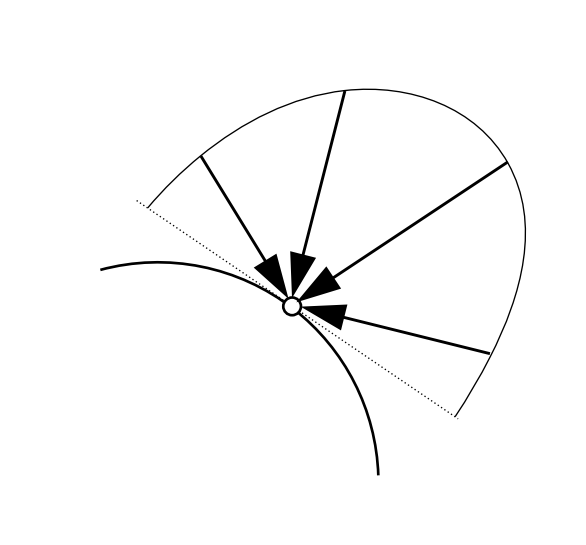
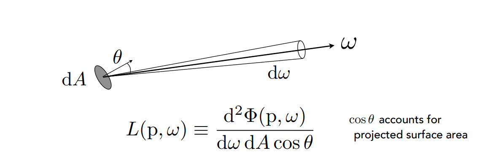
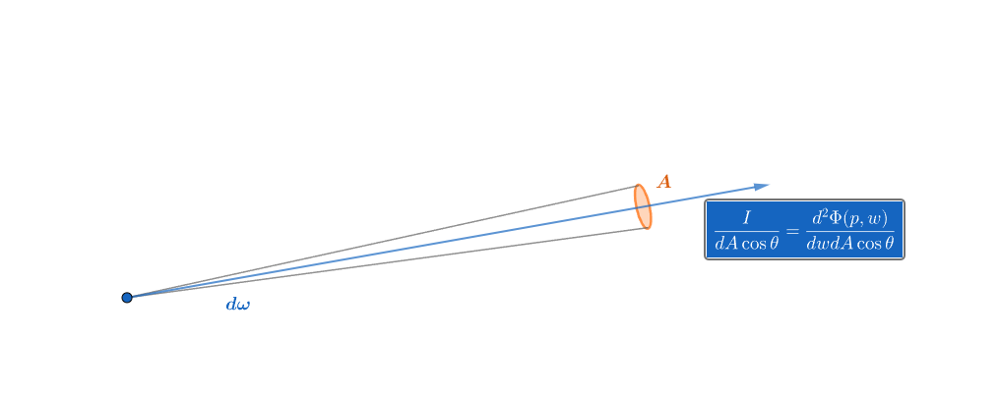
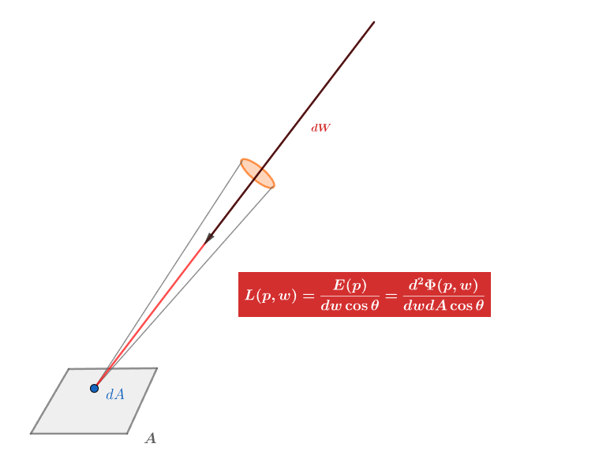
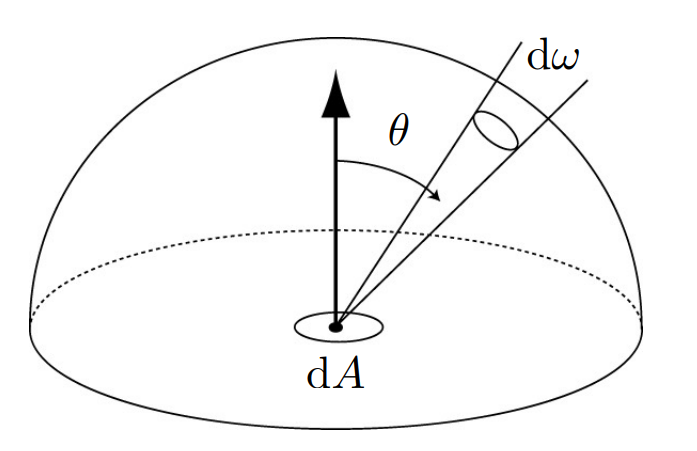

图形学的数学基础（二十二）：辐射度量学
图形学的数学基础（二十二）：辐射度量学
辐射度量学（$Radiometry$）
辐射度量学是基于物理光照的基础，是基于几何光学来定义的，提供了精准的关于光的各种物理量，光与物体表面的作用，光线传播方法的定义等。辐射度量学是反射方程 渲染方程的基础。
1.辐射能量（$Radiant\;energy$）
在辐射度量学中最基本的单位是辐射能量，表示为$Q$,单位是$J(焦耳)$，辐射能量$Q$以辐射的形式发射，传播或接收的能量。每个光子都携带一定的能量，这个能量正比于它的频率：
$Q = hv$
其中$h = 6.62620\times (10^{-34})J$.光子的频率（或者说能量）影响着光子与物体表面的交互，更重要的是，它影响着光与感应器之间的作用，使不同频率的光被察觉为不同的颜色。
2.辐射通量（$Radiant\;flux$）
辐射通量，记为为$Φ$，表示单位时间 发射/反射/传播/接受的能量(功率-power)。单位为（$watt$）W或者($lumen$)lm，在辐射测量中，都是基于这个辐射通量来测量能量的，而不是使用能量$Q$。
$Φ = \dfrac{dQ}{dt}$
3.辐射强度（$Radiant\;intensity$）
辐射强度，记为$I$,表示一个点光源在单位立体角上发射能量的功率。表示光源在某一方向上的辐射功率。单位为$(candela)$cd.

在辐射度两学里，通常用$\omega$表示三维空间中的一个方向。$\omega$可以用$\theta和\phi$两个参数定义它的位置。并且可以通过$\sin\theta{d}\theta{d}\phi$表示它的单位立体角。
$I(w) = \dfrac{dΦ}{dw}$

对于空间中的一个点光源，$Radiant\;intensity$表示光源在任意方向上的发射功率。
各向同性点光源
对于空间中各向同性（各方向发射功率相同）的点光源。任意方向辐射功率都是相同的。因此：
光源所有方向单位立体角的$Radiant\;intensity$的积分等于光源的总功率。
$Φ = \int_{s^2}Idw$
任意方向上单位立体角的$Radiant\;intensity$等于
$I = \dfrac{Φ}{4\pi}$
4. 辐射照度（$Irradiance$）
辐射照度，记为$E$，表示单位投影面积的能量功率，用于描述物体表面单位面积接收到的辐射功率。单位为$lux$。

$E(x) = \dfrac{dΦ(x)}{dA}$
5. 辐射亮度（$Radiance$）
用于描述光线在传播过程中的属性。记为$L$，表示为单位投影面积 单位立体角被发射/反射/转换/接收的辐射功率（一条光线所携带的功率）。.单位为$nit$
$L(p,w) = \dfrac{d^2Φ(p,w)}{dwdA\cos\theta}$
$Radiance$做两次微分，一次是单位立体角，一次是投影面积，两次微分后，将功率收束为一条光线。

两种理解方式
- $Radiant\;intensity$
$Radiant\;intensity$是点光源在某一方向单位立体角的辐射功率，是一个由点及面的过程。

$Radiance$可以理解为$Radiant\;intensity$在单位投影面积上的微分，将光源从$w$方向单位立体角辐射的功率收束为一条光线。描述了光线发射过程中，光线传播的性质。
一句话描述$Radiance$等于单位投影面积上的$Radiant\;intensity$
$L(p,w) = \dfrac{dI(p,w)}{dA\cos\theta}$
- $Irradiance$

$Radiance$可以理解为$Irradiance$在某一方向$W$单位立体角上接收的光照辐射功率，是物体表面单位面积$dA$接收的各个方向的辐射功率（$Irradiance$）在某一单位立体角上的微分。描述了物体接收光照辐射过程中，光线的“形状”。
一句话描述$Radiance$等于单位立体角上的 $Irradiance$。
$L(p,w) = \dfrac{dE(p)}{dw\cos\theta}$
总结：
$L(p,w) = \dfrac{dI(p,w)}{dA\cos\theta} = \dfrac{dE(p)}{dw\cos\theta} = \dfrac{d^2Φ(p,w)}{dwdA\cos\theta}$
$Irradiance\;vs\;Radiance$
$Irradiance$: 单位面积$dA$接收到的所有能量
$Radiance$：单位面积$dA$从方向$dw$上接收到的能量。
$E(p) = \int_{H^2}L_i(p,w)\cos\theta{dw}$
$dE(p,w) = L_i(p,w)\cos\theta{dw}$
单位面积$dA$上的$Irradiance$等于各个角度$Radiance$的半球积分。

辐射度测量术语表
| 名称 | 符号 | En | SI单位 | 描述 |
|---|---|---|---|---|
| 辐射能量 | $Q$ | $Radiant\;Energy$ | $J$ | 一段时间内辐射的总能量 |
| 辐射通量 | $Φ$ | $Radiant\;flux$ | $Watt$或$lm$ | 单位时间 发射/反射/传播/接受的能量(功率-power) |
| 辐射强度 | $I$ | $Radiant\;intensity$ | $candela$ | 点光源在单位立体角上的辐射功率 |
| 辐射照度 | $E$ | $Irradiance$ | $lux$ | 单位投影面积接收到的辐射功率 |
| 辐射强度 | $L$ | $Radiance$ | $nit$ | 单位投影面积 单位立体角被发射/反射/转换/接收的辐射功率（一条光线所携带的功率） |